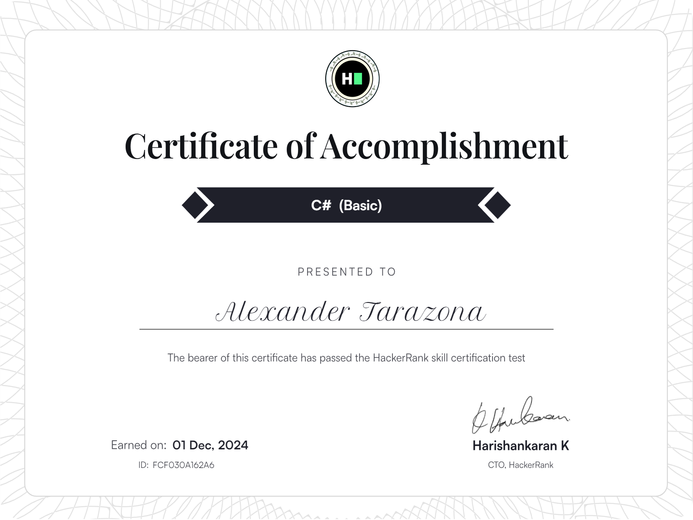
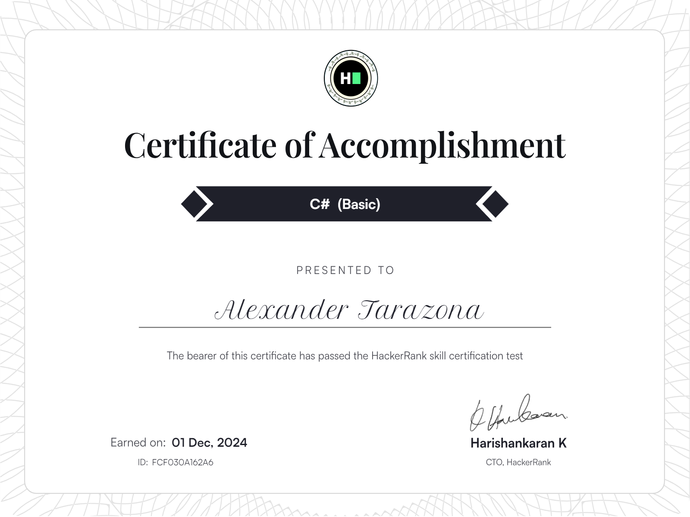
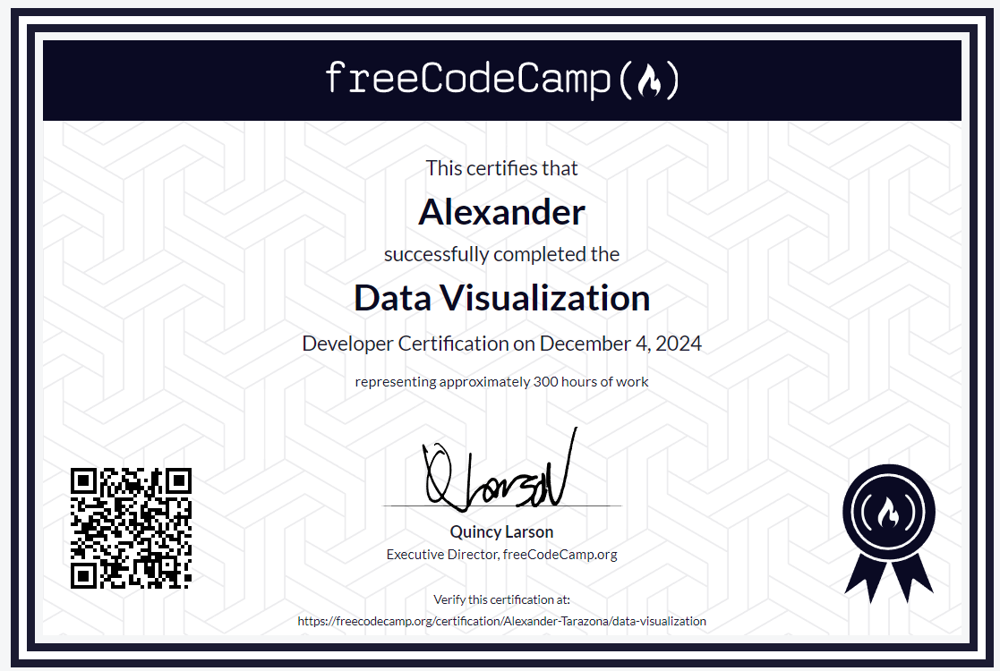
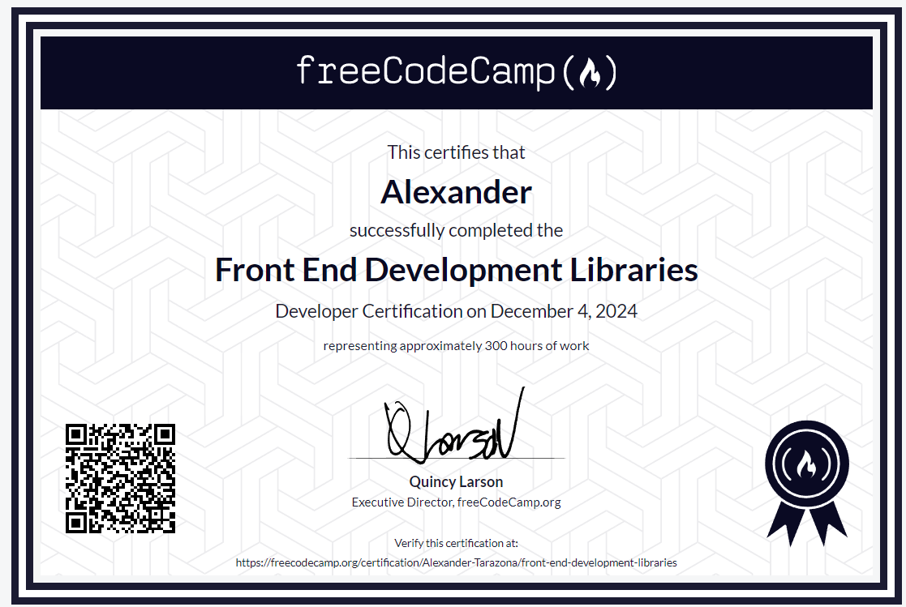
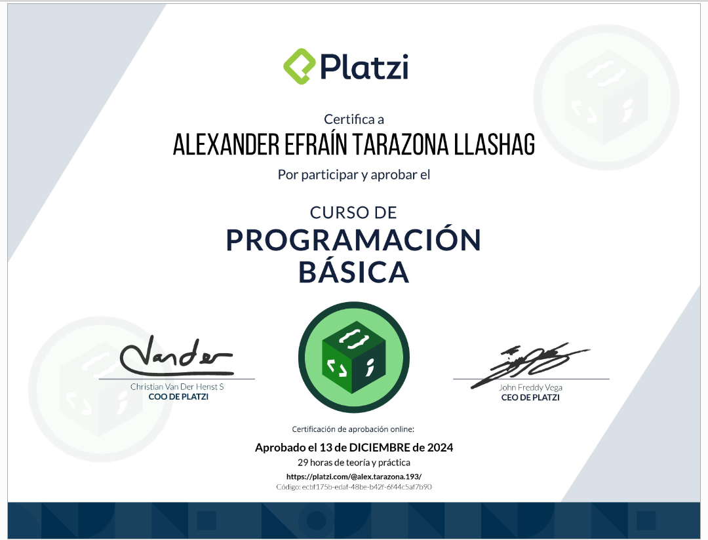
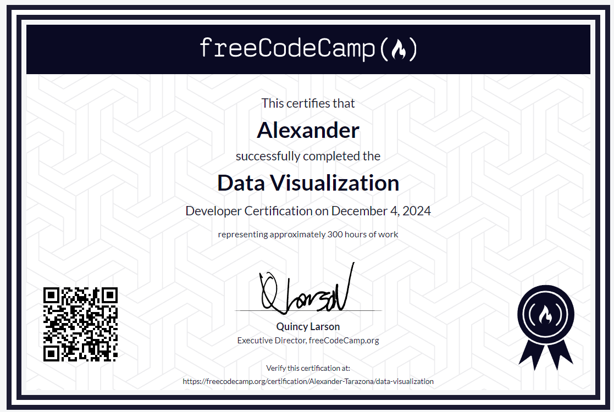
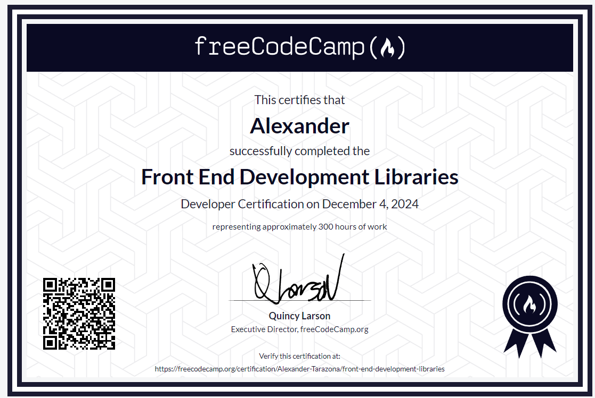
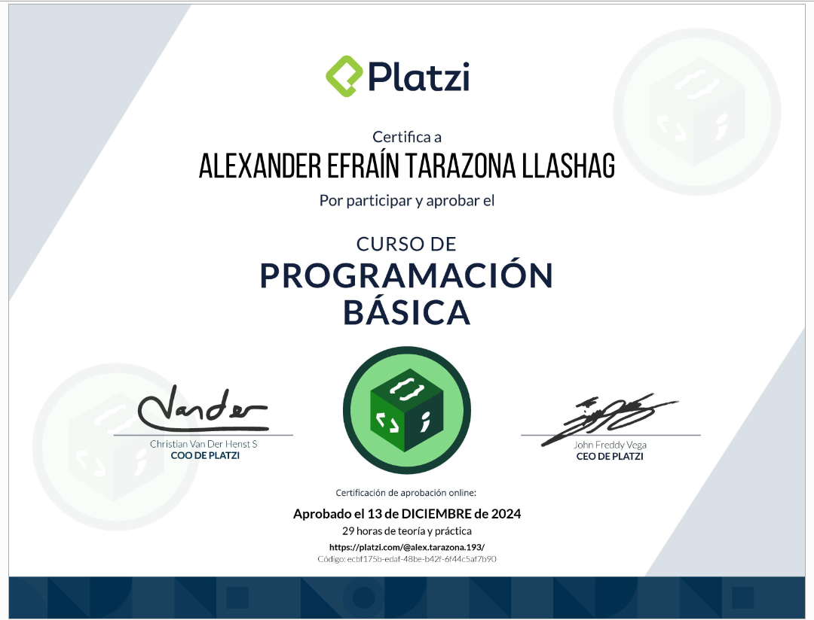

Conóceme!
Desarrollador Full Stack con experiencia en React, Node.js y MySQL. He trabajado en la creación de sistemas web eficientes para la gestión de compras y ventas, optimizando el control de inventarios y la administración de productos. Con conocimientos sólidos en desarrollo frontend y backend, he implementado soluciones escalables y seguras, integrando autenticación con JWT y manejando bases de datos con MySQL.
Apasionado por la tecnología y la innovación, siempre busco mejorar mis habilidades y aprender nuevas tecnologías. Tengo experiencia en proyectos personales y profesionales, trabajando en equipo para resolver problemas y entregar soluciones de calidad.


 


 




